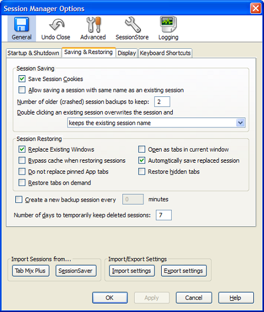
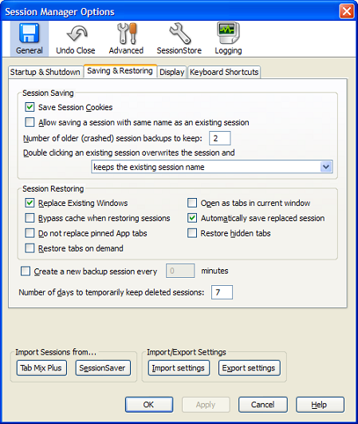
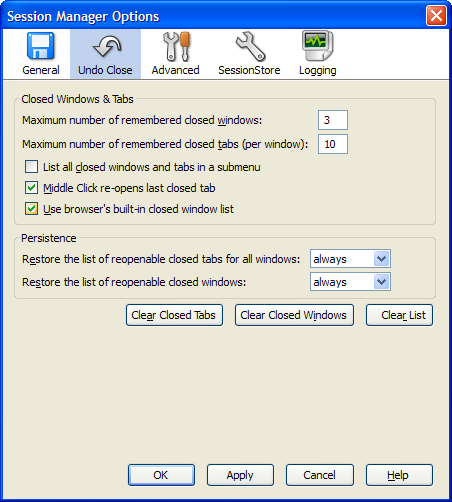
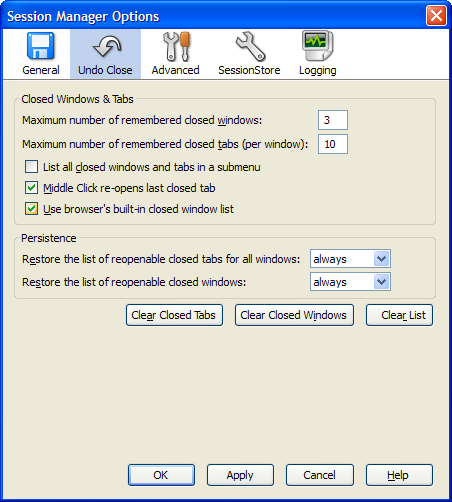
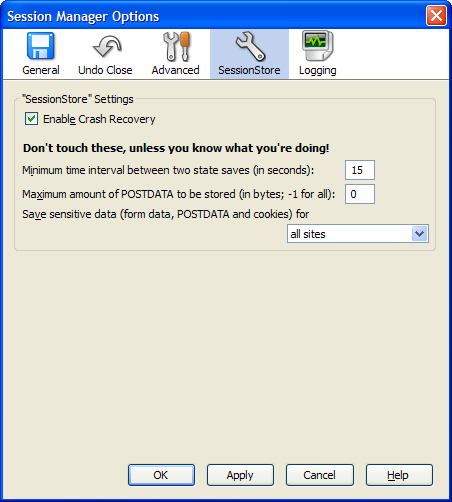
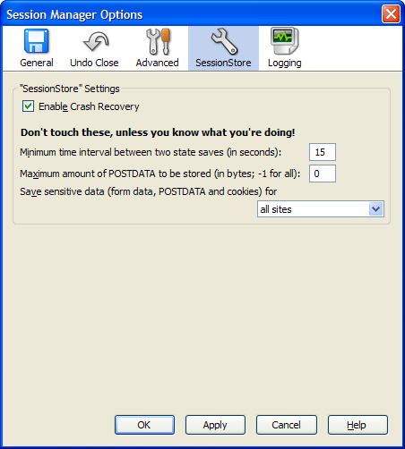
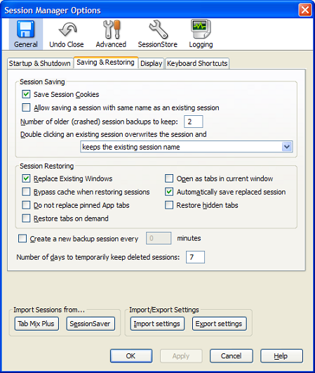
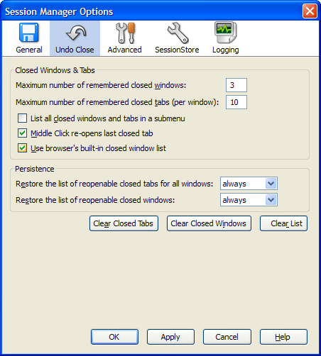
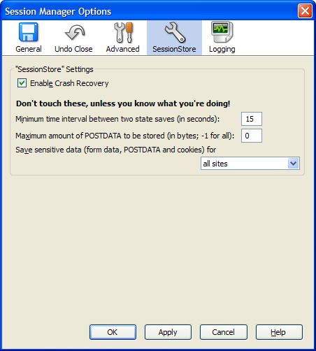

 

 

Session Manager offers you basic session saving, restoring and managing through a submenu to the Tools menu or through an optional toolbar button:

You can also access closed tabs and windows using the optional recently closed tabs and windows button:

After a crash, you're offered with a dialog to restore the crashed or any of your previously saved sessions:
You can also have Session Manager prompt you to resume a session when the browser loads:
The following options are currently available to adapt Session Manager to your needs:



Note: The toolbar buttons are not available to SeaMonkey users. In addition some options may not display at certain times.